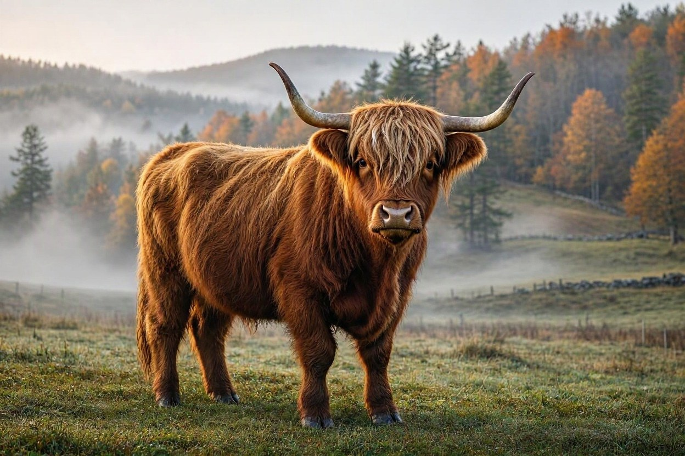

November 2026: Highland Cow Facts, History & News
November 1, 2026
Highland cattle, those shaggy “hairy coos” from the Scottish Highlands, have been a favorite around Ellijay and the North Georgia mountains for good reason. Their long, wind-proof coats and calm nature fit right in with the cool ridges and pasture land we have here.
These are one of the oldest registered cattle breeds. The Highland Cattle Society started the first herd book in 1884. Originally there were two types: smaller, often black Kyloes from the Western Isles, and larger reddish ones from the mainland. Both made the long cattle drives south into England centuries ago. Their double coat, sweeping horns, and ability to graze rough ground still make them ideal for mountain country.
Recent news keeps the breed in the spotlight. Just over the line near Blue Ridge, a 67-acre mountain farm listed this fall came with about 20 long-haired Highland cattle that can stay with the property. Locally, the McDonald family is building the Highlands Ranch in Ellijay with purebred Highlands and plans for agritourism. Farther north in Scotland, estate managers are pairing Highland cattle with rare Irish Droimeann stock and old-style horseback herding to restore woodland and open ground without heavy fencing.
Whether you’re driving the back roads of Gilmer County or just following the story of these hardy mountain cattle, November is a good time to appreciate the breed that thrives in places like ours.
Learn more on our dedicated Highland Cows page.